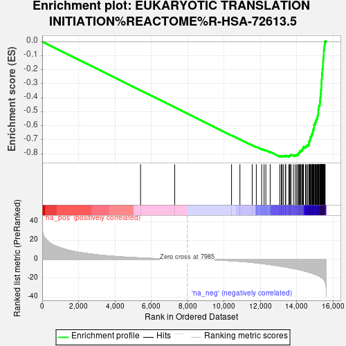
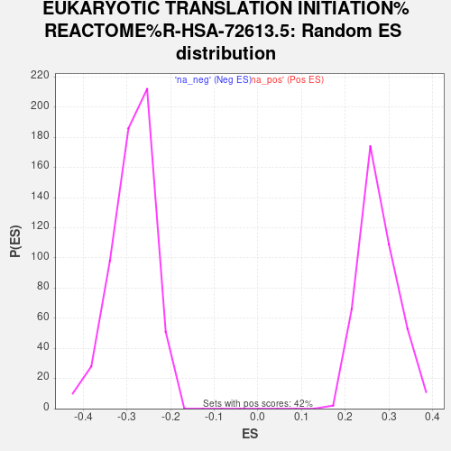

| Dataset | Combo_vs_Naive_Ranked_Genes |
| Phenotype | NoPhenotypeAvailable |
| Upregulated in class | na_neg |
| GeneSet | EUKARYOTIC TRANSLATION INITIATION%REACTOME%R-HSA-72613.5 |
| Enrichment Score (ES) | -0.82168514 |
| Normalized Enrichment Score (NES) | -2.8626292 |
| Nominal p-value | 0.0 |
| FDR q-value | 0.0 |
| FWER p-Value | 0.0 |

| SYMBOL | RANK IN GENE LIST | RANK METRIC SCORE | RUNNING ES | CORE ENRICHMENT | |
|---|---|---|---|---|---|
| 1 | RPL36A | 5410 | 1.485 | -0.3475 | No |
| 2 | EIF3D | 7290 | 0.252 | -0.4684 | No |
| 3 | RPS27L | 10417 | -1.571 | -0.6688 | No |
| 4 | EIF2B1 | 10879 | -2.154 | -0.6971 | No |
| 5 | EIF3H | 11555 | -3.333 | -0.7384 | No |
| 6 | EIF2S3 | 11780 | -3.873 | -0.7504 | No |
| 7 | EIF2B2 | 12076 | -4.542 | -0.7665 | No |
| 8 | RPL36AL | 12207 | -4.851 | -0.7717 | No |
| 9 | RPS20 | 12305 | -5.078 | -0.7747 | No |
| 10 | EIF3C | 12544 | -5.665 | -0.7864 | No |
| 11 | RPS9 | 13070 | -7.185 | -0.8156 | No |
| 12 | EIF4A2 | 13153 | -7.462 | -0.8161 | No |
| 13 | EIF2B3 | 13202 | -7.614 | -0.8143 | No |
| 14 | EIF3F | 13279 | -7.833 | -0.8142 | No |
| 15 | RPLP1 | 13394 | -8.178 | -0.8162 | Yes |
| 16 | RPL17 | 13395 | -8.186 | -0.8110 | Yes |
| 17 | EIF3G | 13562 | -8.794 | -0.8160 | Yes |
| 18 | EIF2S1 | 13614 | -8.952 | -0.8136 | Yes |
| 19 | EIF2B5 | 13638 | -9.065 | -0.8092 | Yes |
| 20 | RPS10 | 13697 | -9.307 | -0.8070 | Yes |
| 21 | RPL22 | 13825 | -9.764 | -0.8089 | Yes |
| 22 | RPL28 | 13924 | -10.172 | -0.8087 | Yes |
| 23 | UBA52 | 14000 | -10.461 | -0.8068 | Yes |
| 24 | RPS27 | 14072 | -10.775 | -0.8045 | Yes |
| 25 | RPS23 | 14079 | -10.795 | -0.7979 | Yes |
| 26 | FAU | 14130 | -10.979 | -0.7941 | Yes |
| 27 | RPS29 | 14153 | -11.093 | -0.7884 | Yes |
| 28 | RPS26 | 14175 | -11.191 | -0.7825 | Yes |
| 29 | EIF2B4 | 14216 | -11.348 | -0.7778 | Yes |
| 30 | EIF5 | 14277 | -11.658 | -0.7742 | Yes |
| 31 | RPL39 | 14315 | -11.796 | -0.7690 | Yes |
| 32 | EIF3L | 14338 | -11.958 | -0.7628 | Yes |
| 33 | EIF3M | 14376 | -12.120 | -0.7574 | Yes |
| 34 | RPL34 | 14379 | -12.128 | -0.7497 | Yes |
| 35 | EIF4B | 14489 | -12.644 | -0.7486 | Yes |
| 36 | RPL30 | 14531 | -12.809 | -0.7430 | Yes |
| 37 | EIF4EBP1 | 14599 | -13.206 | -0.7388 | Yes |
| 38 | RPL41 | 14670 | -13.657 | -0.7346 | Yes |
| 39 | EIF3A | 14682 | -13.775 | -0.7264 | Yes |
| 40 | RPS28 | 14685 | -13.802 | -0.7177 | Yes |
| 41 | RPS12 | 14691 | -13.869 | -0.7091 | Yes |
| 42 | EIF3J | 14726 | -14.047 | -0.7023 | Yes |
| 43 | RPL7 | 14752 | -14.198 | -0.6948 | Yes |
| 44 | RPS16 | 14762 | -14.259 | -0.6862 | Yes |
| 45 | RPS13 | 14767 | -14.275 | -0.6773 | Yes |
| 46 | RPL29 | 14816 | -14.610 | -0.6710 | Yes |
| 47 | RPL31 | 14818 | -14.636 | -0.6617 | Yes |
| 48 | RPL37 | 14867 | -14.901 | -0.6552 | Yes |
| 49 | EIF3I | 14879 | -14.991 | -0.6463 | Yes |
| 50 | RPS5 | 14900 | -15.172 | -0.6378 | Yes |
| 51 | EIF4E | 14905 | -15.206 | -0.6283 | Yes |
| 52 | RPL15 | 14943 | -15.508 | -0.6207 | Yes |
| 53 | EIF1AX | 14954 | -15.566 | -0.6114 | Yes |
| 54 | RPS14 | 14956 | -15.573 | -0.6015 | Yes |
| 55 | EIF3E | 14957 | -15.577 | -0.5915 | Yes |
| 56 | EIF4H | 15016 | -16.002 | -0.5849 | Yes |
| 57 | RPS21 | 15028 | -16.103 | -0.5753 | Yes |
| 58 | RPS27A | 15057 | -16.318 | -0.5666 | Yes |
| 59 | RPL24 | 15076 | -16.538 | -0.5571 | Yes |
| 60 | PABPC1 | 15104 | -16.715 | -0.5482 | Yes |
| 61 | RPS6 | 15146 | -17.044 | -0.5398 | Yes |
| 62 | RPS4X | 15152 | -17.085 | -0.5292 | Yes |
| 63 | RPL3 | 15183 | -17.325 | -0.5200 | Yes |
| 64 | RPL10 | 15188 | -17.353 | -0.5091 | Yes |
| 65 | RPS15A | 15192 | -17.388 | -0.4981 | Yes |
| 66 | RPL13A | 15193 | -17.407 | -0.4870 | Yes |
| 67 | EIF2S2 | 15210 | -17.546 | -0.4767 | Yes |
| 68 | RPS11 | 15211 | -17.568 | -0.4654 | Yes |
| 69 | RPL37A | 15232 | -17.712 | -0.4554 | Yes |
| 70 | RPL27A | 15275 | -18.212 | -0.4464 | Yes |
| 71 | RPS3 | 15279 | -18.249 | -0.4348 | Yes |
| 72 | RPL13 | 15287 | -18.364 | -0.4235 | Yes |
| 73 | RPS19 | 15292 | -18.405 | -0.4119 | Yes |
| 74 | RPL21 | 15294 | -18.423 | -0.4002 | Yes |
| 75 | RPLP0 | 15318 | -18.677 | -0.3897 | Yes |
| 76 | RPL26L1 | 15321 | -18.689 | -0.3778 | Yes |
| 77 | RPL26 | 15328 | -18.759 | -0.3661 | Yes |
| 78 | RPLP2 | 15337 | -18.934 | -0.3545 | Yes |
| 79 | RPL11 | 15339 | -18.965 | -0.3424 | Yes |
| 80 | RPS7 | 15358 | -19.289 | -0.3311 | Yes |
| 81 | RPL38 | 15360 | -19.294 | -0.3188 | Yes |
| 82 | RPL22L1 | 15362 | -19.310 | -0.3065 | Yes |
| 83 | RPL18 | 15365 | -19.356 | -0.2942 | Yes |
| 84 | RPS24 | 15368 | -19.400 | -0.2819 | Yes |
| 85 | RPL23 | 15374 | -19.439 | -0.2697 | Yes |
| 86 | EIF3B | 15385 | -19.549 | -0.2578 | Yes |
| 87 | RPL5 | 15391 | -19.729 | -0.2454 | Yes |
| 88 | RPL27 | 15400 | -19.851 | -0.2332 | Yes |
| 89 | RPS15 | 15407 | -19.989 | -0.2208 | Yes |
| 90 | RPL12 | 15414 | -20.092 | -0.2082 | Yes |
| 91 | RPL18A | 15417 | -20.136 | -0.1954 | Yes |
| 92 | RPL6 | 15444 | -20.577 | -0.1839 | Yes |
| 93 | EIF5B | 15446 | -20.593 | -0.1707 | Yes |
| 94 | RPL32 | 15450 | -20.711 | -0.1576 | Yes |
| 95 | RPL8 | 15452 | -20.733 | -0.1444 | Yes |
| 96 | RPL35A | 15461 | -20.888 | -0.1315 | Yes |
| 97 | RPL35 | 15473 | -21.150 | -0.1186 | Yes |
| 98 | RPL14 | 15482 | -21.351 | -0.1054 | Yes |
| 99 | RPL36 | 15489 | -21.452 | -0.0920 | Yes |
| 100 | RPL19 | 15492 | -21.474 | -0.0784 | Yes |
| 101 | RPS8 | 15493 | -21.476 | -0.0646 | Yes |
| 102 | RPL23A | 15508 | -21.696 | -0.0515 | Yes |
| 103 | RPSA | 15525 | -22.256 | -0.0383 | Yes |
| 104 | RPL10A | 15532 | -22.537 | -0.0242 | Yes |
| 105 | RPL4 | 15544 | -23.165 | -0.0100 | Yes |
| 106 | EIF4G1 | 15568 | -24.032 | 0.0039 | Yes |
